경쟁사 소재 해부 · 실물 캡처
마녀공장이 지금 실제로 돌리고 있는 광고 소재 전부
아마존 Sponsored Brands 영상 + 메타 광고 이미지·영상 28개 원본을 2026-08-13에 직접 내려받아 한 장씩 뜯었다. 전략 요약이 아니라 보고 바로 따라 만들 수 있는 실물이다.
한 줄 결론 — 마녀공장은 소재를 매번 새로 만들지 않는다. 마스터 템플릿 4개에 제품·리뷰문장·가격·판매량 숫자만 갈아끼운다. 영상도 마찬가지로 스크립트 1개에 얼굴만 3명을 바꿔 돌린다. 우리가 소재 1개를 공들여 만드는 자리에서, 같은 노력으로 20개가 나오는 구조다.
1확보한 소재 목록
실물 파일이 전부 저장소에 들어와 있다. 아래 모든 이미지·영상은 캡처한 원본이다.
| 채널 | 수집일 | 개수 | 내용 | 저장 위치 |
|---|---|---|---|---|
| 아마존 SB 비디오 | 08-13 | 2 | 마녀공장 글루타치온 세럼 SB + 같은 카테고리 경쟁사(inyoe) SB | assets/manyo/amazon-sb-0813/ |
| 메타 이미지 | 08-13 | 7 | 리뷰인용·B&A증거·권위이식 템플릿 실물 | assets/manyo/meta-0813/ |
| 메타 영상 | 08-13 | 3 | Day 0→7 다이어리, 모델 3인 병렬 버전 | assets/manyo/meta-0813/ |
| 메타 이미지 | 07-21 | 11 | 주간딜 폭격형·리테일 권위형 | assets/manyo/meta/ |
| 메타 영상 | 07-21 | 5 | 크리에이터 화이트리스팅 UGC | assets/manyo/meta/ |
※ 7월 수집분 16개는 그동안 저장만 되고 어떤 보고서에도 안 올라가 있었다. 이번에 전부 지면에 올린다.
2아마존 SB 영상 — 화면을 좌우로 나누는 게 규칙이다
우리가 지금 SB에 올린 소재와 가장 크게 어긋나는 지점. 여기부터 고치면 효과가 가장 빠르다.
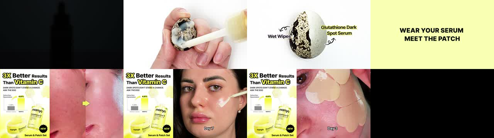
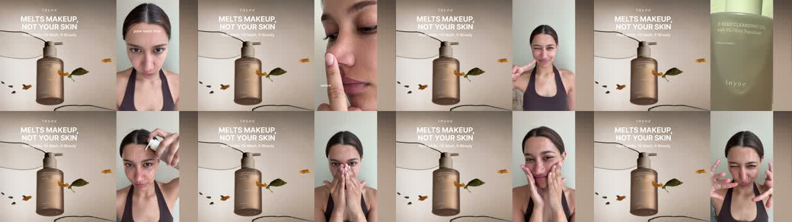
두 브랜드가 똑같이 쓰는 구조
| 왼쪽 (고정) | 오른쪽 (계속 바뀜) | |
|---|---|---|
| 마녀공장 | “3X Better Results Than Vitamin C” + 임상 막대그래프 + 제품샷 + NEW 뱃지 + “Serum & Patch Set” | 피부 비포애프터 → Day 7 도포 → Day 3 패치 |
| inyoe | “MELTS MAKEUP, NOT YOUR SKIN” + 제품 뷰티샷 | 크리에이터 UGC (모공 지목 → 세안 → 마무리) |
왜 이렇게 만드나
아마존 검색결과에서 SB 영상은 작게, 소리 없이, 사용자가 스크롤하는 도중에 재생된다. 끝까지 보는 사람이 거의 없다. 그래서 어느 순간에 멈춰도 팔 말이 화면에 남아 있어야 한다. 왼쪽 고정 패널이 그 역할이다 — 영상을 광고가 아니라 움직이는 배너로 쓰는 것. 메타 영상(세로 전체화면, 자막만)과는 설계가 완전히 다르다.
우리 현황과 대조
우리가 미국 SB에 올린 히어로 소재(김보은 C1)는 전체화면 UGC 한 컷이다. 멈추면 남는 정보가 없다. 같은 영상을 그대로 두고 왼쪽 35%에 고정 패널만 덧붙이면 이 구조가 된다 — 재촬영 없이 편집만으로 가능하다. 구체 제안은 6장.
3메타 이미지 — 마스터 템플릿 4개가 전부다
아래 실물들을 나란히 보면 같은 판에 내용만 바뀐 게 눈에 보인다.
템플릿 A — 리뷰 인용형 가장 많이 쓰임
고객 리뷰 문장을 광고 헤드라인 자리에 통째로 올린다. 브랜드가 하는 말이 아니라 산 사람이 한 말이라 방어가 쉽고, 규제도 덜 걸린다.


구성 요소 (위→아래 순서 고정)
- 브랜드 × amazon 로고 락업 — 오렌지 크롬 질감. “아마존에서 산다”를 이미지 맨 위에 박음
- 리뷰 인용 헤드라인 — 큰따옴표 포함, 화면 절반을 먹는 초대형 굵은 산세리프, 왼쪽 정렬
- — Verified Amazon Customer — 출처 한 줄. 이게 있어야 인용이 성립
- 가격 — 정가에 취소선 + 할인가를 오렌지 아웃라인 대형 숫자로
- 검정 블록 뱃지 2줄 — “KOREA NO.1” / “22M+ SOLD”
- 별 5개 + amazon 로고 — 맨 아래 마감
핵심: 세 장의 인용 문장이 사실상 같다(“friends thought I got a facial”). 제품이 달라도 문장은 재사용한다. 즉 이건 리뷰를 고른 게 아니라 먹히는 문장 하나를 찾아서 전 제품에 이식한 것이다.
템플릿 B — 비포애프터 증거형
실제 피부 매크로 사진을 쓴다. 보정한 모델컷이 아니라 모공·피지가 그대로 보이는 사진이다.

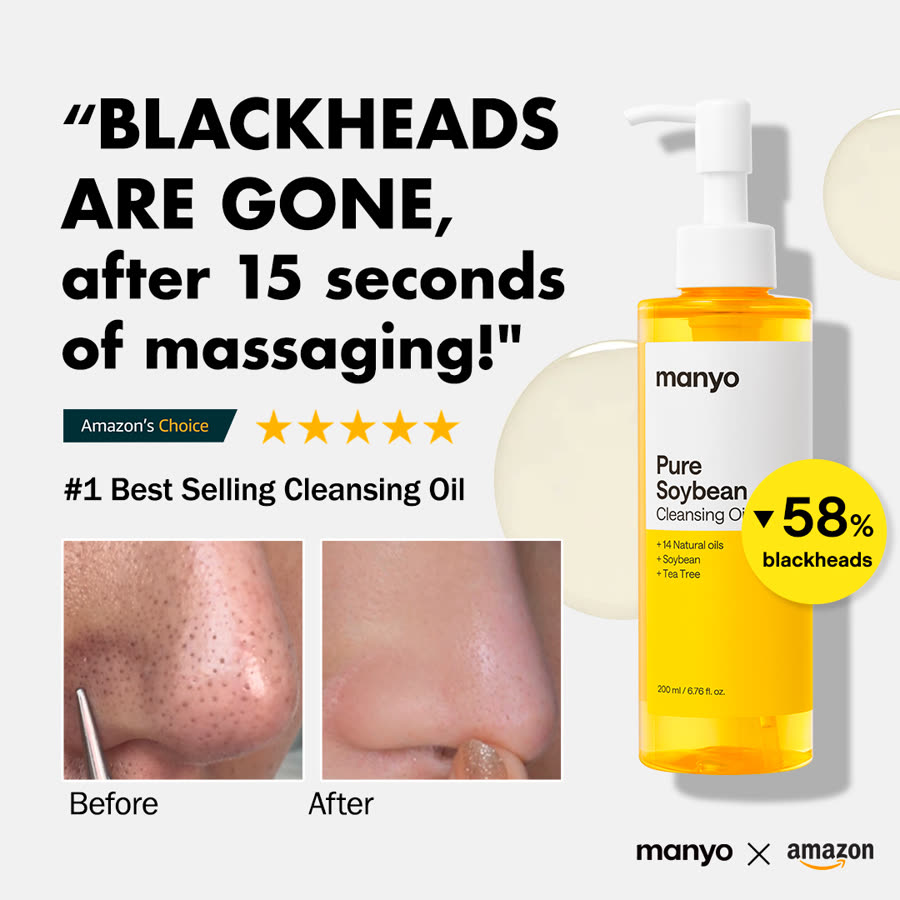
두 가지가 눈에 띈다.
- 시간을 초 단위로 못 박는다 — “빠르게”가 아니라 “15초 마사지 후”. 검증 가능한 형태로 말해서 오히려 더 믿긴다.
- 아마존 공식 뱃지를 이미지에 그려 넣는다 — “Amazon’s Choice” 라벨을 소재 안에 재현. 플랫폼 신뢰를 소재로 끌어온다.
템플릿 C — 딜 폭격형 (주간 딜 기간에만)
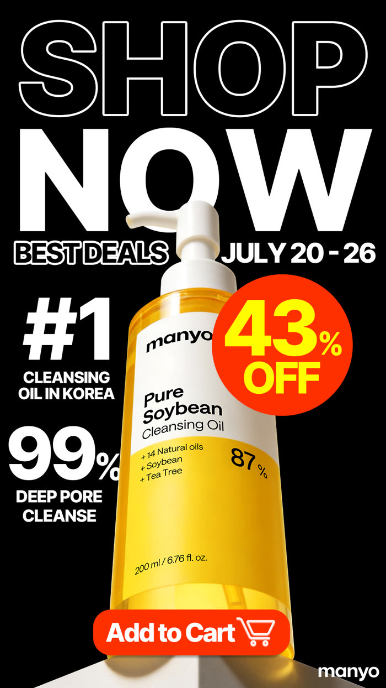
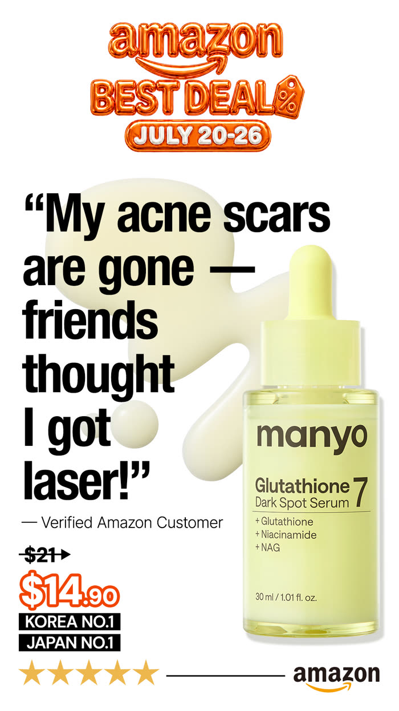
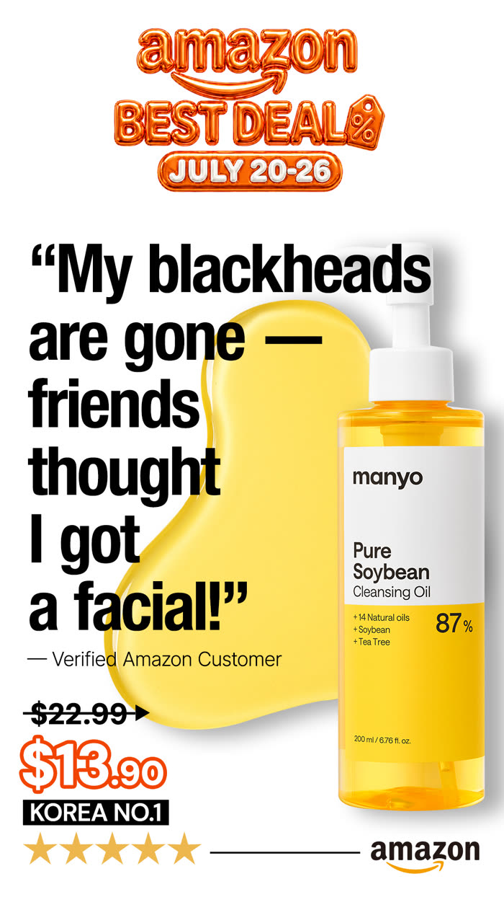
딜 기간에 새 소재를 만드는 게 아니라 기존 템플릿에 날짜·할인율 띠만 덧댄다. 그래서 딜마다 수십 개를 하루에 낼 수 있다.
템플릿 D — 권위 이식형
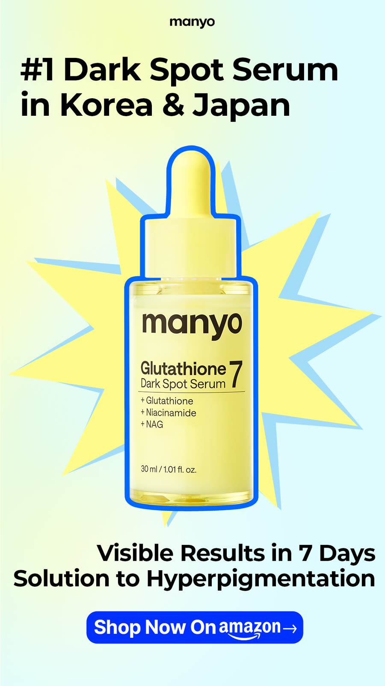
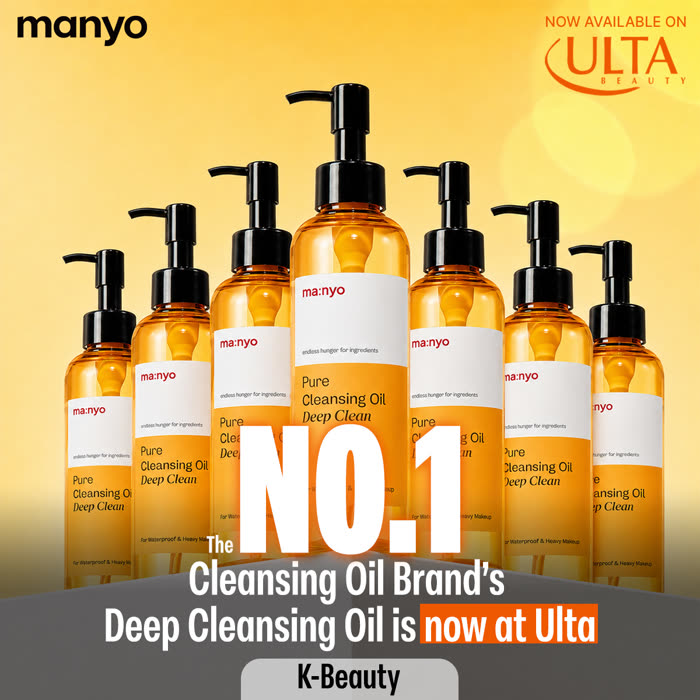
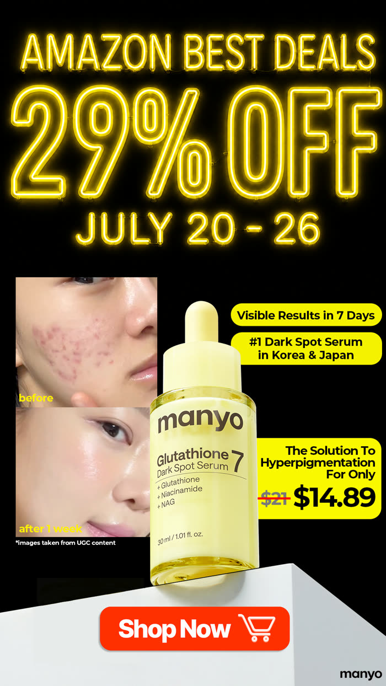
자기가 좋다고 말하는 대신 남의 권위를 화면에 얹는다 — 잡지·리테일러 로고·국가 1위·판매량. 주장 자체는 매번 같다.
4메타 영상 — 스크립트 1개, 얼굴 3개
세 영상을 나란히 재생해보면 대사와 컷 순서가 같다.
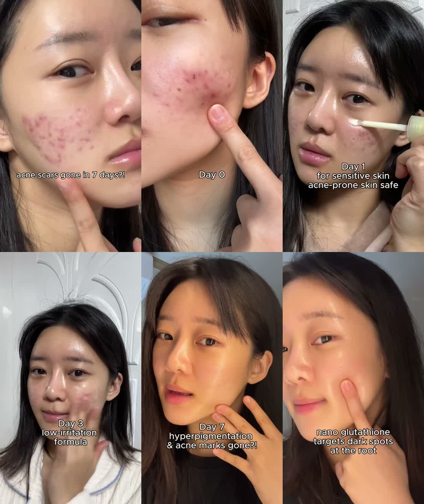
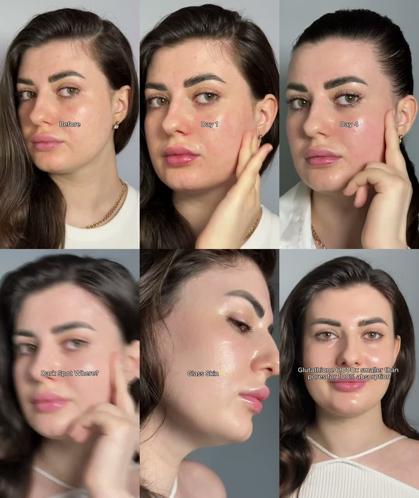

공통 스크립트 (720×1280 세로 · 30fps · 19~21초)
| 구간 | 내용 | 실제 자막 |
|---|---|---|
| 0–2초 | 의문형 훅 — 단정하지 않고 물어본다 | “acne scars gone in 7 days?!” · “No more dark spots?” |
| 2–4초 | Before 매크로 — 결점을 미화 없이 크게. 손가락으로 지목 | “Day 0” · “Before” |
| 4–14초 | Day 1 → 3 → 5 → 7 진행 — 매 컷 제품 도포 장면(스포이드에서 액체 흐르는 샷) | “Day 1 / for sensitive skin” · “Day 3 / low-irritation formula” · “Day 5” · “Day 7” |
| 14–17초 | 결과 감탄 — 짧게 한 마디 | “Dark Spot Where?” · “Glass Skin ✨” · “hyperpigmentation & acne marks gone?!” |
| 17–20초 | 성분 메커니즘 한 줄 — 왜 되는지로 마감 | “nano glutathione targets dark spots at the root” · “Glutathione 6,000× smaller than pores for 100% absorption” · “3X more effective than Vitamin C” |
세 가지 제작 규칙
- 자막은 흰 산세리프, 배경 박스 없음. 화면 중앙~중하단. 그림자만 살짝.
- 얼굴만 바꿔 병렬 집행. 인종·피부톤이 다른 3인 이상. 같은 스크립트라 제작비가 거의 안 늘고, 어느 얼굴이 먹히는지 데이터로 가른다.
- 파일명에 ASMR. 도포·텍스처 소리를 의도적으로 살린 버전을 따로 만든다.
7월 크리에이터 UGC (화이트리스팅 트랙)
이쪽은 크리에이터 개인 계정 명의로 나가는 branded content다. 자사 제작 영상(위)과 트랙이 분리돼 있다.
5카피 라이브러리 — 실제로 쓰고 있는 문구 전량
번역해서 쓰라는 게 아니라, 어떤 종류의 문장을 쓰는지 보라는 목록이다.
헤드라인 (리뷰 인용)
- “My blackheads are gone — friends thought I got a facial!”
- “My skin is so smooth — friends thought I got a facial!”
- “BLACKHEADS ARE GONE, after 15 seconds of massaging!”
- “People thought I got a facial”
순위·규모 뱃지
- KOREA NO.1 / 22M+ SOLD
- KOREA NO.1 / 900K+ SOLD
- #1 Dark Spot Serum in Korea & Japan
- #1 Best Selling Cleansing Oil
- NO.1 in Korea for 7 Years
- KOREA NO.1 CLEANSING OIL BRAND
수치 클레임
- ▼58% blackheads
- 99% Deep Pore Cleanse
- 3X Better Results Than Vitamin C
- Glutathione 6,000× smaller than pores for 100% absorption
- 69.6% of dead skin in just 1 use
영상 훅
- acne scars gone in 7 days?!
- No more dark spots?
- Dark Spot Where?
- Glass Skin ✨
- CAN THIS ERASE DARK SPOTS OFF A QUAIL EGG?
CTA
- Shop Now On amazon →
- SHOP NOW
- Add to Cart 🛒
- DON’T MISS OUT
신뢰 장치
- — Verified Amazon Customer
- Amazon’s Choice (뱃지 그래픽 재현)
- 별 5개 + amazon 로고
- 브랜드 × amazon 로고 락업
- ULTA / OLIVE YOUNG 로고 병기
문장 길이가 전부 짧다. 가장 긴 헤드라인도 10단어 안쪽이고, 대부분 주어가 “나”이거나 숫자로 시작한다.
6레몬더마 즉시 제작 브리프
위 템플릿을 우리 제품·우리 규정에 맞춰 옮긴 것. 이대로 발주하면 된다.
- 구체 임상수치는 아마존(PDP·A+·SB)에서만. 메타 광고에는 쓰지 않는다 — 마녀공장도 “3X vs Vitamin C” 카드는 아마존 SB에서만 쓴다.
- 메타 카피에 이모지 금지 (우리 룰). 마녀공장은 이모지를 많이 쓰지만 우리는 안 쓴다.
- 성분 표기는 “비건 마이크로 크리스탈”. 브랜드명은 “레몬더마”.
브리프 1 — 아마존 SB 영상에 왼쪽 고정 패널 붙이기 최우선
| 무엇을 | 지금 돌리는 히어로 영상(김보은 C1)을 재촬영 없이 편집만 |
|---|---|
| 어떻게 | 화면을 좌 35% / 우 65%로 분할. 오른쪽에 기존 영상 그대로, 왼쪽에 영상 내내 안 바뀌는 패널 |
| 왼쪽 패널에 넣을 것 | ① 제품 컷 ② 핵심 주장 한 줄 ③ 임상 막대그래프 ④ 제품명. 아마존이라 수치 사용 가능 |
| 왜 | SB는 음소거·소형·스크롤 중 재생. 아무 프레임에서 멈춰도 팔 말이 남아야 한다 |
| 검증 | 영상 아무 지점이나 정지 → 제품·주장이 읽히면 통과 |
브리프 2 — 리뷰 인용형 이미지 세트
| 무엇을 | 우리 아마존 실제 리뷰에서 가장 구체적인 문장 3개를 뽑아 헤드라인으로 |
|---|---|
| 레이아웃 | 레몬더마 × amazon 락업(상단) → 큰따옴표 인용문(화면 절반) → “— Verified Amazon Customer” → 가격 → 검정 뱃지 2줄 → 별 + amazon 로고 |
| 우리 뱃지로 쓸 것 | 실측으로 뒷받침되는 것만. 판매량·순위를 아직 못 쓰면 “Vegan Microcrystal” · “Dermatologist-Tested” 같은 사실 뱃지로 대체 |
| 가격 표기 | 세럼 $36.58 / 크림 $36. 할인 표기 시 세럼 $26 · 크림 $24 아래로는 내리지 않는다 |
| 먼저 할 일 | 리뷰에서 인용 후보 뽑기 — 아직 안 했다 |
브리프 3 — Day 0→7 다이어리 영상, 얼굴 3인 병렬
| 구조 | 의문형 훅 → Before 매크로 → Day 1·3·5·7 → 결과 한 마디 → 성분 메커니즘 한 줄 |
|---|---|
| 규격 | 720×1280 세로 · 19~21초 · 흰 자막(배경 박스 없음) · 도포 소리 살린 ASMR 버전 별도 |
| 우리 자산 | AI 인물 모델 로스터가 이미 있다 (us/performance/ai-models/) — 얼굴 3인 병렬이 바로 가능 |
| 주의 | AI 생성 이미지로 임상 근거를 만드는 건 금지(2026-07-06 결정). Day 표기는 사용 경과 표시일 뿐 임상 결과 주장이 아니어야 한다 |
브리프 4 — 사물 데모 (메추리알 자리에 무엇을 놓을 것인가)
| 왜 좋은가 | 사람 피부 비포애프터가 아니라 사물 실험이라 규제·불신을 동시에 피하면서 효능을 보여준다 |
|---|---|
| 우리 후보 | “비건 마이크로 크리스탈”이 흡수를 돕는다는 걸 눈에 보이게 만드는 실험 — 물질이 표면을 통과하는 장면 |
| 상태 | 아이디어 단계. 무엇을 놓을지는 아직 정해지지 않았다 — 여기가 이번 리서치의 진짜 숙제 |
7우리와의 격차 — 숫자로
| 마녀공장 | 레몬더마 (현재) | 차이의 정체 | |
|---|---|---|---|
| 메타 활성 광고 수 | 111건 (7월 실측) | 소수 | 템플릿 재사용으로 양을 만든다 |
| 소재 제작 방식 | 마스터 템플릿 4개 × SKU × 담당자 4명 곱집합 | 건별 제작 | 같은 노력으로 나오는 개수가 다르다 |
| 영상 얼굴 수 | 스크립트 1개당 3인 이상 병렬 | 히어로 1인 | 어느 얼굴이 먹히는지 데이터로 가른다 |
| SB 영상 구조 | 좌우 분할 (고정 패널 + 데모) | 전체화면 UGC | 멈췄을 때 남는 정보량 |
| 가격 | 세럼 $14.89 | 세럼 $36.58 | 2.5배 — 가격으로 붙으면 진다 |
| 리뷰 수 | 세럼 224건 / 클렌징오일 6,786건 | 축적 중 | “Verified Customer” 인용의 원재료 |
이 표에서 우리가 당장 좁힐 수 있는 건 4개 중 3개다. 소재 제작 방식(템플릿화)·영상 얼굴 수(AI 모델 로스터 보유)·SB 구조(편집만으로 가능)는 돈이 아니라 방식의 문제라 이번 주에 바꿀 수 있다. 가격과 리뷰 수는 시간이 필요하다. 가격으로 붙지 않는 것이 전제다.
8부록 — 나머지 수집 자산 전량
위 본문에 인용하지 않은 것까지 하나도 빼지 않고 올린다.
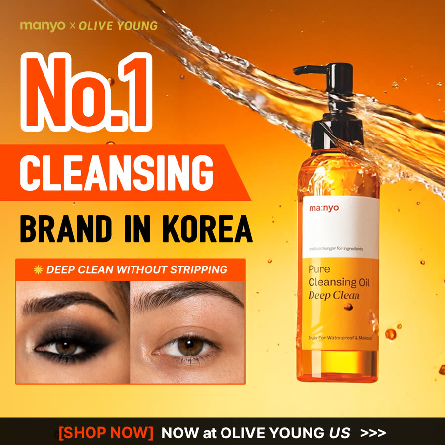
DCO_img_OY19xbno1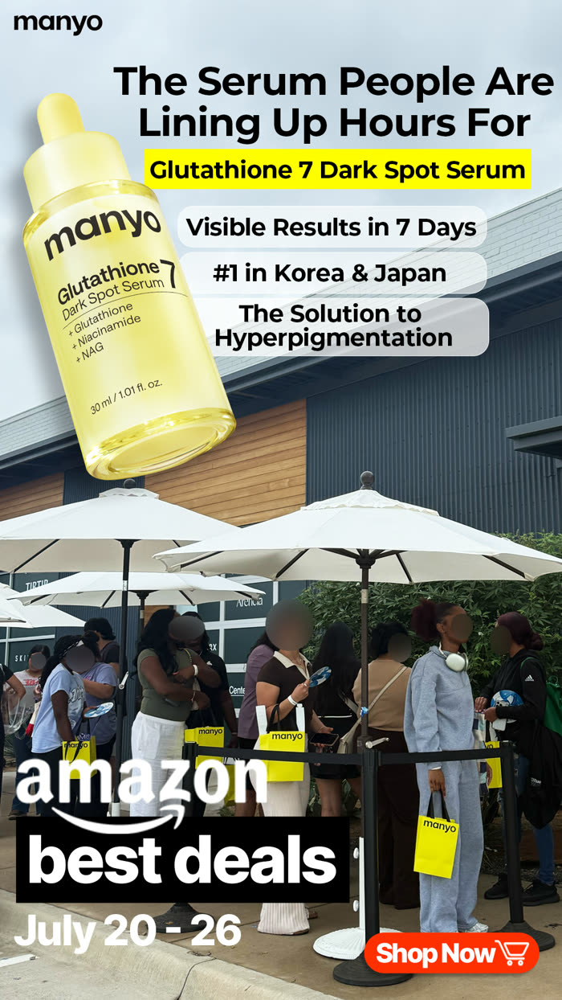
gs_lineup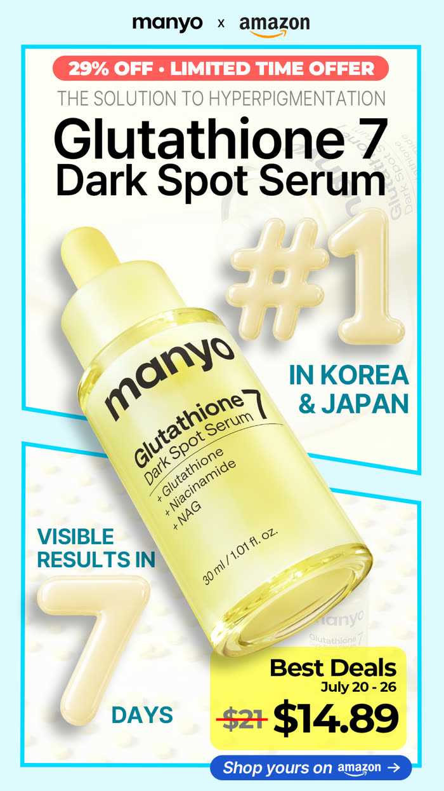
gs_magazine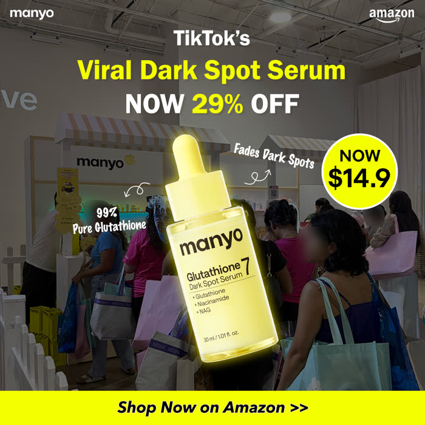
gs_tiktokviral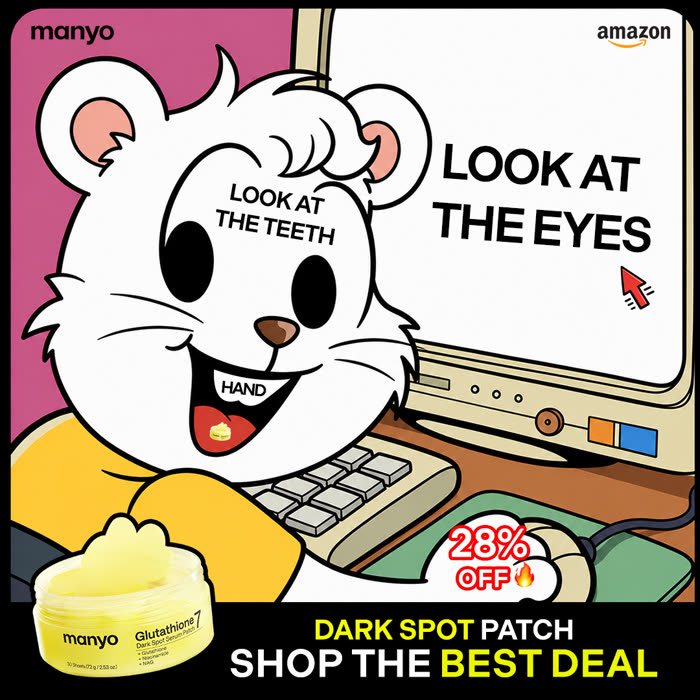
gsp_bear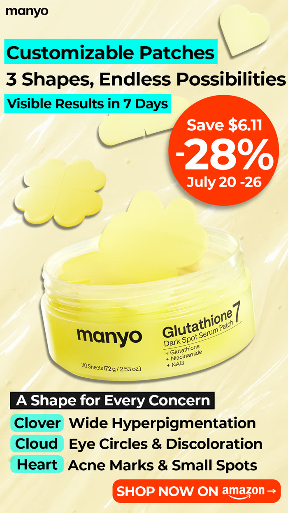
gsp_lopsided_magazine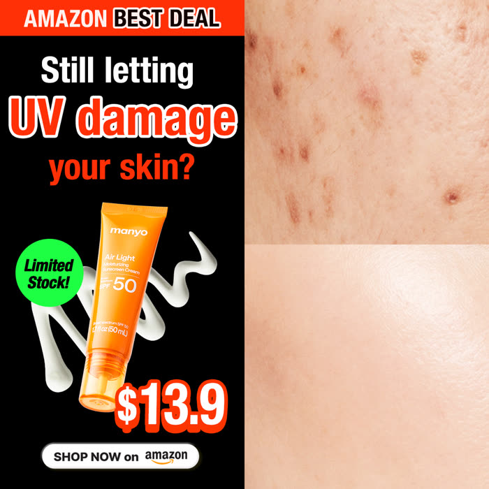
otc_sss005vid_gs_atcmissoutvid_gs_yellowtape